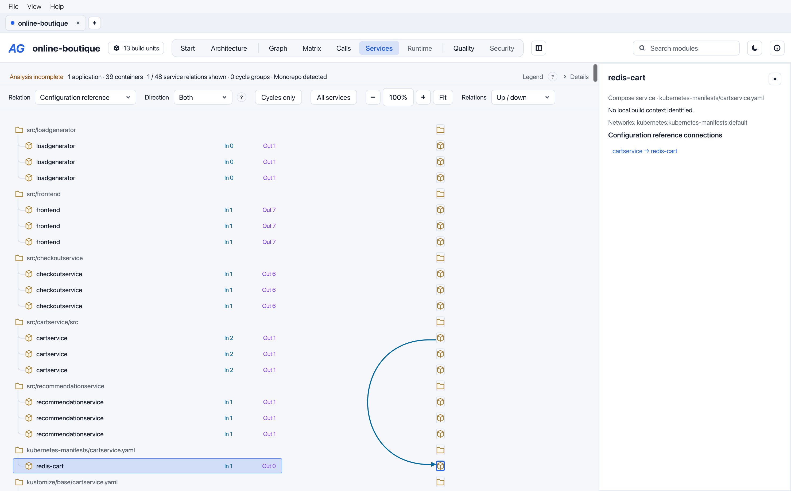
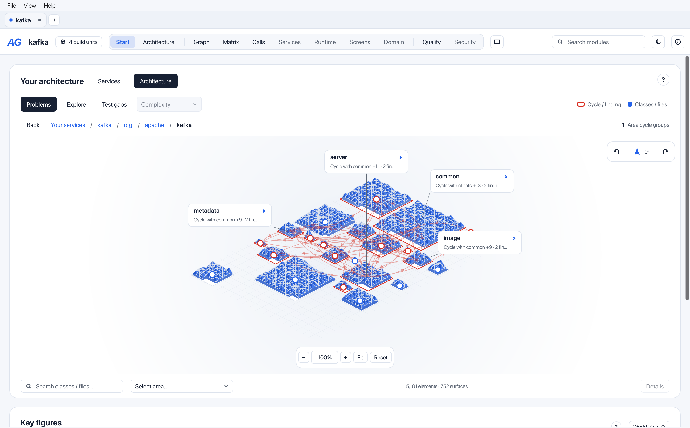

Start with the code.
Open a project without writing a configuration file. Explore package imports, files and supported service connections.
Evidence-based architecture analysis that tells you what it measures and what it cannot. Explore dependencies on your desktop, enforce rules in CI and give your coding agent the same evidence.
Explore your project
Missing evidence is not a zero. Non-commercial open source · Local analysis · No telemetry
Open a project without writing a configuration file. Explore package imports, files and supported service connections.
Inspect source references and cycle groups. Keep declared dependencies separate from observed runtime calls.
Add architecture rules, check them in CI, or ask your coding agent to investigate through the MCP server.
One pass through Apache Commons Collections: a full turn around the cycle map, then the coupling metric, the map package, the dependency graph, the calls, the class metrics and the arc42 documentation.
Captures from the ArchGuard desktop app: the World View turned in 5° steps, then six views with short fades; no sound and no simulated clicks. With reduced motion turned on, the video waits for you to press play.
World View draws every class as a surface inside its package. Choose a metric and the surfaces take its colour; each label shows the highest value inside.

Surfaces are coloured from low to high by the maximum cyclomatic complexity of their methods. The status line names the highest recorded value: 29, in the map package.
Grey means not measured. Class metrics come from compiler-backed analysis (for Java, a JDK). Classes it could not cover stay grey as unknown instead of showing zero. RFC, DIT and NOC are available in the same metric selector. Cognitive complexity, Halstead and maintainability metrics depend on the language adapter; Tools & prerequisites lists what each language needs.
Move from the big picture to a specific relationship. Each view answers a different architecture question.

Explore package dependencies in their tree structure. Select a package to focus its relationships and inspect the supporting source references.
UI flows, domain models and load scenarios take ArchGuard beyond dependencies. This is the evidenced development-branch snapshot of 20 November 2026.
In development · separate branches · not verified as one combined release. Examples describe their respective development branch; a normal installation may not include these commands yet.
Which screens exist, where does an action lead, and which backend call follows? Screens, transitions and actions retain source locations; dynamic targets remain explicit gaps.
IN DEVELOPMENTScreens and endpoints as rows, roles as columns; table, JSON or CSV output and MCP access. Screen cells evaluate their own access condition, not the entire navigation path.
IN DEVELOPMENTRead aggregates, entities, value objects, fields and relations through defined patterns. List API models and DTOs separately instead of counting them as domain entities. Imports cover patterns without extractors.
IN DEVELOPMENTFollow action → endpoint → use case → state change → event → handler. Reverse lookup asks which screens, endpoints or messages can cause a state such as Paid. Role evaluation preserves unknown results.
IN DEVELOPMENTOpt into checks for readable navigation and HTTP URLs, declared endpoint access, frontend/backend agreement, state changes and event creation. New checks find targets without matching routes and endpoints without detected UI calls; external clients can explain the latter.
IN DEVELOPMENTVary explicit entry points, call rates, instances and service times. Unknown inputs produce ranges; potential bottlenecks name their assumptions and drivers. CLI, MCP and World View expose the same scenario model.
Do two services quietly share a table?
Read deployment evidence from Compose, Kubernetes and Terraform. Add Helm or Kustomize rendering explicitly. Follow datastore connections down to supported ORM and SQL table declarations.
archguard services . --format jsonShared server, shared database and shared table are distinct findings. Unknown table names stay unknown; configuration does not prove runtime use. No cluster access, secrets or Terraform state.
The new Online Boutique example reads static manifests. Helm and Kustomize remain deliberately unrendered in this run. Analysis data and limits.
Commands and limits
Online Boutique: static configuration references with partial analysis. Helm and Kustomize rendering is disabled. Capture and source revision.

Online Boutique: redis-cart datastore configuration evidence. This does not establish shared-table access or runtime use. Capture and source revision.
Does this pull request introduce a new architecture violation?
Run layer rules and thresholds with archguard check. Adopt existing cycles deliberately with a baseline, then review the change and its KPI deltas in a pull-request comment. The repository includes a GitHub Action.
archguard check . --baseline
archguard review . --base main --format pr-commentA baseline is a ratchet, not a clean bill of health. Rules determine the gate; evidence gaps and accepted findings remain visible.
Recorded check: exit code 1. Spring PetClinic under a deliberately restrictive local teaching policy: one layer finding. This is not an upstream defect report. Recorded JSON.
The locally generated PR comment (German output) shows the output format. Tracked source files are unchanged; this is not evidence of a real code regression. Configuration, Git refs and limits.
Commands and limits
Spring PetClinic: graph under the illustrative local teaching policy. The check result and PR comment are separate recorded artifacts. Capture and source revision.
Which source lines explain this dependency?
Connect the local stdio MCP server to your coding agent. Ask for a bounded change context, inspect a cycle and follow its source evidence. Desktop, CLI and agent query the same analysis.
archguard mcp --root /path/to/projectRead-only questions and simulations are distinct from imports, baselines and other persistent actions. Review a proposed edit and run the project tests after implementing it.
A real JSON-RPC session against Commons Collections; not a staged Claude Code conversation. The edge-evidence query returns, among other references:
edge_evidence
comparators → ComparatorUtils.java
NullComparator.java:23
import org.apache.commons.collections4.ComparatorUtils;
Commons Collections · source locations behind calls. Real desktop capture; scope and capture date in capture notes.
Would cutting this dependency actually break the cycle?
Simulate cut, move and merge operations on the module graph. Compare cycle groups before changing a source file. Use real node names returned by your analysis or export operations from the viewer.
archguard simulate . --ops operations.json --format jsonA virtual graph change is not an implemented refactoring. Source compatibility, behaviour and tests still need checking. The command reads an operations file exported from the viewer.
Recorded experiment: 3 → 2 cycle groups. Cutting comparators → ComparatorUtils virtually resolves one group. It does not remove every cycle or change source files. Simulation parameters and result.
Commands and limits
Before: Commons Collections has three cycle groups. Capture and source revision.

After the applied virtual cut: two cycle groups remain. Source files are unchanged. Capture and source revision.
Does the documentation still match this revision?
Generate all arc42 chapters in German or English, select diagrams and check for drift. Export Word for a Confluence import, AsciiDoc, a Structurizr/C4 model or a Markdown assessment with Mermaid.
archguard doc . --arc42 --stdout
archguard doc . --arc42 --format docx
archguard graph . --format structurizrGenerated evidence supplements human decisions. Word exports keep diagrams as Mermaid or PlantUML source; they do not embed rendered diagrams. A C4 export reflects the supported source and deployment scope.
Commands and limits
Microsoft eShop · arc42 context and scope. Real desktop capture; scope and capture date in capture notes.
Martin A/I zones, propagation cost, SDP violations, tangledness, health, layer drift and leaky encapsulation. Interpret each metric with its scope.
archguard review . --format jsonGit churn × coupling, co-change without imports, CODEOWNERS and a decision register with explicit ADR references.
archguard hotspots .
archguard co-change .
archguard ownership .OpenAPI import, source GraphQL and breaking-change baselines. Import OTel traces for observed calls, N+1 candidates and slow statements; sampling profiles are separate evidence.
archguard contracts .
archguard runtime .Coverage, SARIF, JUnit, mutation reports and CPD imports; built-in duplicate scan. Offline CycloneDX inventory and explicit licence policy; advisories require scanner evidence.
archguard sbom . --format cyclonedx
archguard evaluate .ISO 25010 goals organise evidence; they do not prove a goal is met. Recall and precision require a human expert assessment.
Start with the included service demo, then explore open-source libraries, a large Java codebase and real microservice systems. Paths are relative to the ArchGuard repository; open them with File → Open project… in the desktop app.
“Why do these services depend on each other?”
A deliberately coupled shop across three Compose stacks. Follow the catalog → pricing → promotions cycle or investigate orders → payments → risk.
examples/service-shopOpen this folder in the desktop app and choose Services. No containers required. Configured HTTP and startup dependencies are separate evidence.
Demo walkthrough“Where do packages become tightly coupled?”
Inspect a Java library through its graph, World View and tree matrix. Expand packages, focus a cycle, and trace imports back to source files.
examples/checkouts/commons-collectionsClone the example and copy its configuration first using the walkthrough. Import analysis works without building the library; compiler-backed metrics need a suitable JDK.
Setup & walkthrough“Can event-driven services form a cycle?”
Catalog API and Payment Processor both exchange events with Ordering API. Follow the inferred cycle group, inspect publishers and subscribers, then open a service's packages and classes.
examples/checkouts/eshopStatic event-name matching over shared RabbitMQ configuration. These are candidate routes, not observed runtime traffic.
Setup, cycle & source evidence
“How far do cycles reach in a large codebase?”
Analyze 3,369 production Java files without building Kafka. Open the architecture landscape, step into the packages with cycles and trace a two-file cycle to its import lines.
examples/checkouts/kafkaClone the pinned release and copy its configuration first. Java analysis is partial: no build dependencies or generated types.
Setup & recorded scope
“Which connections are calls, and which are only configuration?”
A shop in Go, Java, C#, TypeScript, Rust and more. Follow checkout's gRPC calls to their source lines, then find out why the telemetry collector closes a configuration cycle.
examples/checkouts/opentelemetry-demoStatic analysis of compose.yaml, collector configuration and sources. No containers are started; coverage is reported as partial.

Use the desktop app to explore, the CLI to automate, and MCP to let a coding agent query the same analysis.
archguard mcp --root /path/to/projectRegister this command as a stdio MCP server in your agent client.
“Show me the largest dependency cycle and the source references that establish it.”
“Which services call orders, and is that connection configured or observed?”
“Explain the architecture findings in this change before suggesting a fix.”
Answers depend on the available source, configuration and imported evidence.
Import graphs work out of the box. Class, method and call analysis uses the language's own tooling where supported; syntax-based analysis needs no compiler.
Missing evidence is not a zero. Dynamic calls, generated code and unavailable dependencies can leave gaps. Coverage, runtime activity and other imported measurements require actual reports. A static graph does not prove the complete runtime architecture. What to install for each language, framework and report ↗
Install the latest release with one command, then point it at your project. The script picks the build for your OS and CPU and checks it against the release's SHA256SUMS. archguard update keeps it current.
Build ArchGuard from a repository checkout with a Rust toolchain, then point it at your project.
Install options and first steps# Install the latest release
curl -fsSL https://raw.githubusercontent.com/@@REPOSITORY@@/main/scripts/install/install.sh | sh
# Open a project in the desktop app
open ~/Applications/ArchGuard.app # macOS, then File → Open project…
archguard-desktop /path/to/project # Linux
# Check architecture in your terminal or CI
archguard check /path/to/project# Install the latest release (PowerShell)
irm https://raw.githubusercontent.com/@@REPOSITORY@@/main/scripts/install/install.ps1 | iex
# Open a project in the desktop app
archguard-desktop C:\path\to\project
# Check architecture in your terminal or CI
archguard check C:\path\to\project# From the ArchGuard repository
cargo install --path crates/archguard-cli --locked
# Open a project in the desktop app
cargo run --release -p archguard-desktop -- /path/to/project
# Check architecture in your terminal or CI
archguard check /path/to/projectThe install script also installs the desktop app; File → Open project… opens further projects.
Rules and detected violations determine the check result.
Install ArchGuard, choose your source scope and explore the desktop app.
FOLLOW THE EVIDENCETrace HTTP and event relationships, inspect evidence and zoom into a service.
ASK YOUR AGENTConnect your coding agent and start with natural-language investigation prompts.